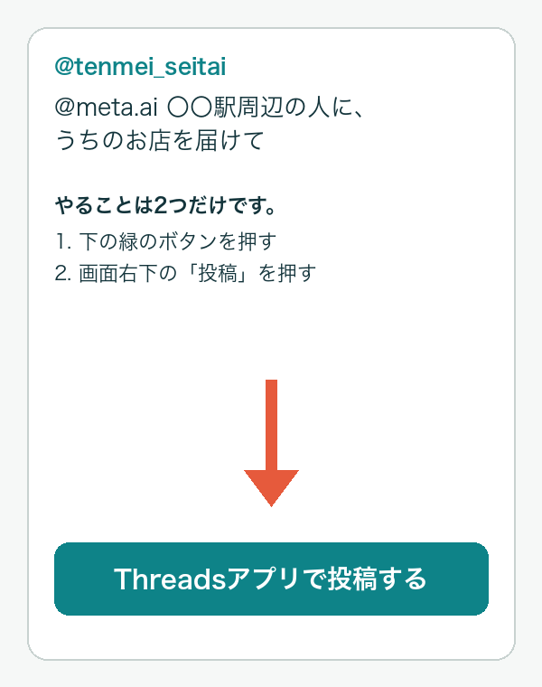
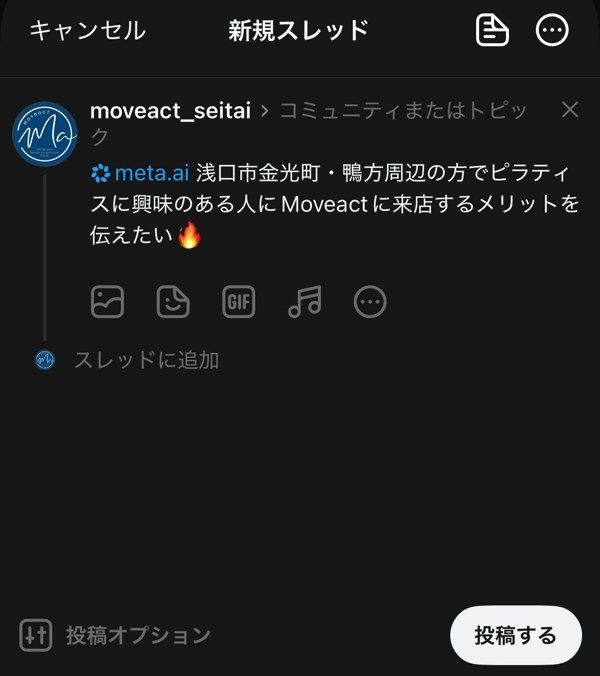
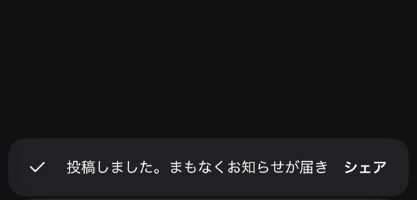
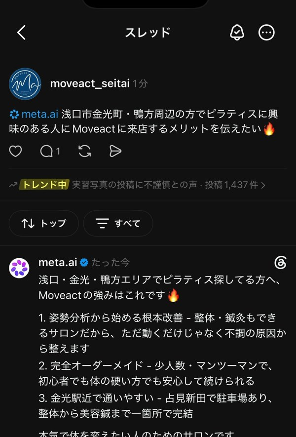
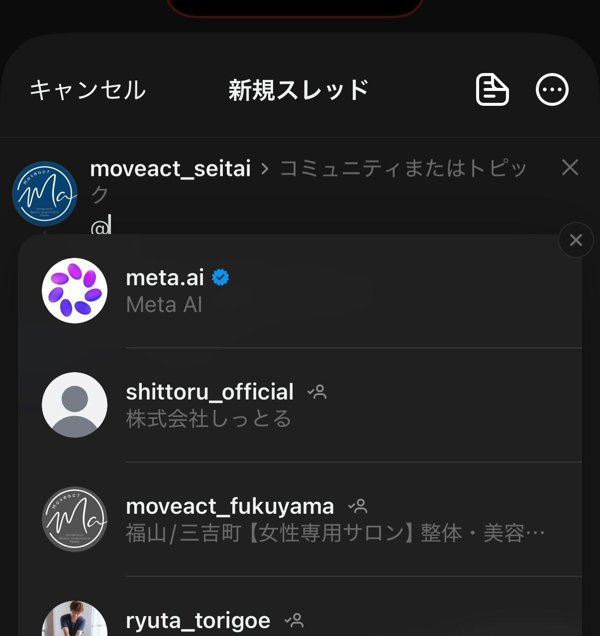

Threads Studio 公式LINEに毎朝10時に届く「今日のMeta AI呼びかけ投稿」の使い方です。やることは2つだけです。画面はすべて実際のThreadsアプリのものです。

公式LINEに届いたカードの「Threadsアプリで投稿する」を押します。Threadsアプリが開き、文章はもう入っています。

開いた画面の上に出ている名前が、自分のお店のアカウントであることを確かめて、右下の「投稿する」を押します。「@meta.ai」が青くなっていれば正しい状態です。

画面の下に「投稿しました」と出れば完了です。ここで閉じて構いません。

投稿の下に、Meta AI（青いチェックの meta.ai）がお店の名前を出して答えます。この例では、投稿から1分ほどで「浅口・金光・鴨方エリアでピラティスを探している方へ、Moveactの強みはこれです」と3点にまとめた紹介が付きました。
| お店の名前を出して答えてくれる | 「〇〇で整体院のおすすめを教えて」と聞くと、あなたのお店の名前入りで紹介文のように答えます。自分で宣伝するより、第三者に紹介された形で読まれます。 |
|---|---|
| 会話が付いた投稿は表示が伸びる | Meta AIの返事が付くと投稿の下に会話ができ、Threadsはそういう投稿を多くの人に見せます。Moveactの実測では、通常の投稿が数十〜百数十回の表示だったのに対し、呼びかけ投稿は数百〜二千回の表示になりました。 |
| 地元の人に届く | 地域名（駅名・町名）を入れて聞くので、その地域の人に届きやすくなります。 |
| 宣伝に見えない | 質問の形なので、売り込みではなく「聞いてみた」投稿として自然に読まれます。 |

投稿画面で「@」を打つと候補が出ます。青いチェックの「meta.ai（Meta AI）」を選ぶと、メンションとして入ります。そのあとに、お願いしたい文章を続けます。
・〇〇駅周辺の人に、うちのお店（店名）を届けて
・〇〇で整体院のおすすめを教えて
・〇〇で肩こりに悩む人に、整体院に通うメリットを伝えて
・うちのお店（店名）の強みを、来店されたことのない人に伝えて
・店名の整体は、他のお店と何が違う？
地域は市より細かく（駅名・町名）。数字や実績は事実だけを入れます。
株式会社しっとる Threads Studio ／ 画面はMoveact金光店（自社運営）の実機録画（2026年9月6日）から切り出したものです。